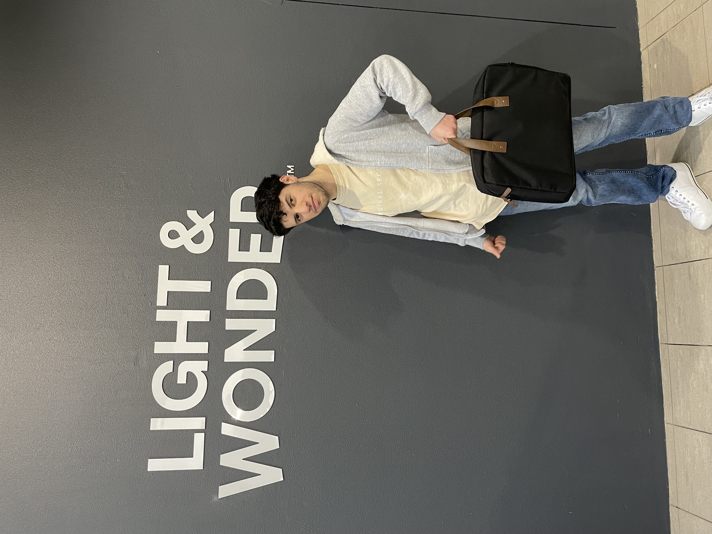

Hi, I'm Michael Bava!
Welcome to my website, I'm an IT professional passionate about solving problems and creating efficient solutions.
Click on the buttons below to learn more about me and my skills below!. Currently this page is about my skills and experience.

Skills
3D modeling
I am proficient in using Blender for 3D modeling and animation. Using this software, I create simple 3D models and animate them for various applications such as my games
Coding
I am proficient in several programming languages including html, CSS, Python, JavaScript, C# and C. I enjoy solving complex problems and creating efficient, scalable programs such as websites, games, and more.
IT Support
I am proficient in providing IT support and troubleshooting various technical issues. I have experience in laptop repairs, hardware maintenance, and software installation.
Game Development
I am proficient in game development using various engines and tools such as Unity and UE. I have experience in creating engaging gameplay mechanics, designing levels, and optimizing performance. I got my experience from AIE and others (see experience section)
My Experience
Internship | Visual Effects & Game Designer
July 2024 - August 2024Light & Wonder
- Created and implemented visually stunning effects using Unity 3D, enhancing player engagement and immersiveness in gaming experiences.
- Developed 3D models and animations using Maya and Blender, contributing to multiple game design projects and gaining valuable insights into the creative process of game development.
- Collaborated with cross-functional teams to understand project requirements and align visual effects with overarching game narratives, demonstrating adaptability and creativity.
- Gained comprehensive knowledge of the end-to-end lifecycle of game development, including design, prototyping, and testing phases within the global gaming industry.
Internship | PC Support Technician
October 2023 - November 2023WorkVentures
- Conducted thorough testing and refurbishment of PC components and electronic devices, ensuring optimal performance and reliability before deployment.
- Assisted in troubleshooting a variety of technical problems, showcasing strong analytical skills and attention to detail while resolving issues efficiently.
- Participated in team meetings to discuss ongoing technical challenges and contributed ideas for improving support processes and user training materials.
- Gained hands-on experience in IT support and repair, enhancing practical knowledge of hardware and software systems in a professional environment.
- Provided technical support for hardware and software issues, assisting users via phone, email, and in-person interactions, which enhanced overall user satisfaction and experience.
Internship | Junior Software Engineer
September 2024 - October 2024ANT61
- Developed basic proficiency in C programming for autonomous robotics applications, focusing on enhancing the functionality and safety of robots designed for unpredictable environments.
- Contributed to innovative projects that leveraged AI-based control systems, which significantly improved operational efficiency and reduced risks to human operators.
- Collaborated closely with a team of engineering students to design, develop, and test creative coding solutions, fostering teamwork and effective communication in a dynamic project environment.
- Engaged in problem-solving sessions that enabled the team to overcome technical challenges, ensuring timely project delivery and functionality.
Education
Cert IV Information Technology Networking
January 2025 - July 2025TAFE
In this course, I have learnt key skills including building networks, using routers and switches, configuring computers, setting up network connections, including cloud services, and troubleshooting activities.
- Resolve client information and communications technology (ICT) problems
- Install and manage small-scale networks
- Contribute to cyber security risk management
- Install and manage virtual machines, including servers
- Gained comprehensive knowledge of the end-to-end lifecycle of game development, including design, prototyping, and testing phases within the global gaming industry.
CUA30720 Certificate III in Design Fundamentals, Game design
May 2023 - November 2024Academy of Interactive Entertainment (AIE) RTO 88021
The Game Design Foundations offered an in-depth exploration of game development. From initial concept to playable demo using industry-standard tools like Unity 3D and Unreal Engine.
- Mastering the art of defining and developing innovative game mechanics
- Crafting detailed game design documentation
- Rapidly prototyping engaging gameplay ideas
- Designing immersive interactive environments
- Leveraging player feedback to enhance and refine designs
Cert IV Web Development
February 2026 - July 2026TAFE
In this course, I gained practical experience in installing and optimising operating systems, troubleshooting ICT issues, and understanding networking fundamentals. I learned to build simple websites and apply basic programming techniques, which enabled me to respond to software and hardware inquiries. This training has equipped me with the essential skills needed for a career in ICT.
- Building simple websites and applying basic programming techniques
- Responding to software and hardware inquiries
- Created a database / backend login small website using PHP and SQL during Cert IV Web Development
- Created websites using HTML, CSS, PHP, Javascript and SQL
- Gathering and incorporating user feedback to enhance and refine designs
Programming Skills
January 2016 - October 2023BYJU'S FutureSchool + STEM
BYJU'S FutureSchool online coding course and STEM was an experience that enhanced my skills and mindset whilst studying from a young age. This interactive, activity-based curriculum not only taught coding but also helped me develop into a problem solver, creative thinker, and confident creator.
- Creating and coding my own video game
- Building 3D items using tinkercad
- used an API for Experimenting with code for satellites locations
- Learned how to program little robots
High School Certificate of completence
January 2019 - December 2024Rosebank Collage
What I'm currently doing
Cert IV Cyber Security course at TAFE